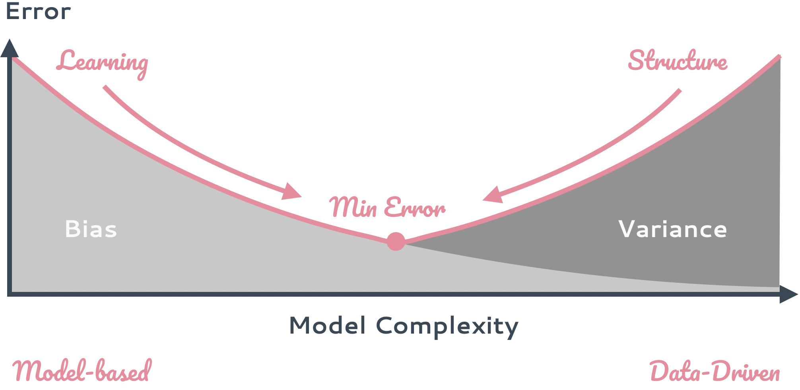

Structure and Learning
Overview

The role of models is to identify or encode patterns in data to approximate some real-world process. These models vary in complexity. Models make mistakes if they are too simple or if they are too complex. If they are too simple, they introduce bias by making erroneous assumptions that do not approximate the real-world process well enough. If models are too complex, they can capture more complex processes but may overfit to training data and thereby suffer high error due to variance. We need to find a model that minimises bias and variance simultaneously.
The role of structure in robot learning is to decrease the variance or generalisation error of a complex model and find a suitable trade-off while not introducing too much bias. Check out the papers below for examples where we combine structure and learning!
Algorithmic and Physics Priors for Learning
Alina Kloss and Maria Bauza and Jiajun Wu and Joshua B. Tenenbaum and Alberto Rodriguez and Jeannette Bohg. Accurate Vision-based Manipulation through Contact Reasoning Submitted to ICRA. 2020.
Li, T., Srinivasan, K., Meng, M., Yuan, W., Bohg, J. Learning Hierarchical Control for Robust In-Hand Manipulation. Submitted to ICRA. 2020.
Yan, M., Zhu, Y., Jin, N., Bohg, J. Self-Supervised Learning of State Estimation for Manipulating Deformable Linear Objects Submitted to IEEE Robotics and Automation Letters with ICRA option. 2020.
Fabio Ferreira, Lin Shao, Tamim Asfour, Jeannette Bohg. Learning Visual Dynamics Models of Rigid Objects using Relational Inductive Biases. NeurIPS 2019 Graph Representation Learning Workshop. September 2019.
Kloss, A., Bohg, J. On Learning Heteroscedastic Noise Models within Differentiable Bayes Filters OpenReview. September 2018.
Kloss, A., Schaal, S., Bohg, J. Combining learned and analytical models for predicting action effects arXiv, September 2017.
Exploiting Rigid Motion for Segmentation
Shao, L., Shah, P., Dwaracherla, V., Bohg, J. Motion-based Object Segmentation based on Dense RGB-D Scene Flow IEEE Robotics and Automation Letters, 3(4):3797-3804, IEEE, IEEE/RSJ International Conference on Intelligent Robots and Systems, October 2018
Shao, L., Tian, Y., Bohg, J. ClusterNet: Instance Segmentation in RGB-D Images arXiv. July 2018.